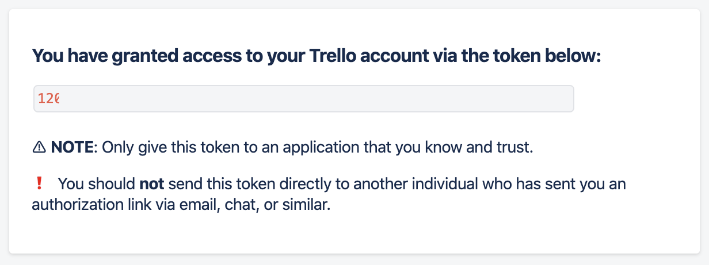

<!DOCTYPE html>
<html lang="zh-tw">
    
<head>
    <meta charset="UTF-8">
    <meta name="viewport" content="width=device-width, initial-scale=1">
    <meta name="generator" content="Yee的補坑筆記">
    <title>trello_notify - Yee的補坑筆記</title>
    <meta name="author" content="Yee">
    
        <meta name="keywords" content="laravel,docker,">
    
    
    
    <script type="application/ld+json">{"@context":"http://schema.org","@type":"BlogPosting","author":{"@type":"Person","name":"Yee","sameAs":["mailto:amung966w@gmail.com"],"image":"yee.jpeg"},"articleBody":"大家安安～ \n不曉得大家會不會忙到差點忘了寫文章，\n所以本週來玩點不一樣的～～\n\n我們是一群人一起挑戰六角的活動，\n所以我們先開了Trello來紀錄每週的主題，\n但後來發現～ 沒有設定卡片的due day其實不會收到通知，\n就會差點忘記寫文章，變得非常的趕～～～\n正當我要一張一張設定due day時，\n我突然想到為什麼不能自己建呢！？ 我們不是工程師嗎！？\n這種事情當然是交給程式自己發揮拉～～\n所以我打開trello的api看一下，摁～～ 有取得也有新增卡片的方法～\n接著再看看list的部分也有～\n那就選擇一個語言後動手開始做吧！\n\n我比較習慣使用python，所以本文使用python3～\n本文所採用的環境\b\n\nMax OSX 10.15\nPython 3.7.3\n\n本文使用vs code的終端 或 mac終端執行py，也可以自行選擇jupyter\npython套件\n\nrequests\nconfigparser\n\n\n首先我們先到Trello Developer，註冊一個開發者帳號，\n註冊流程我就不多加說明了，\n接著就是申請一個api token還有token，token的部分在紅色的框框裡，\n這邊會說你的trello有幾個board，之後都可以存取這些board，allow之後就會出現token拉\n備齊了這兩項key，我們就可以開始拉～\n\n首先先開個ini檔，將剛剛拿到的key &amp; token &amp; board_id 放到裡面，並存成congif.ini\n12345678910111213[Trello];trello token and key;register key and token https:&#x2F;&#x2F;trello.com&#x2F;app-keykey &#x3D; keytoken &#x3D; tokenboard &#x3D; board_id;how many users in trello boardlist_name &#x3D; user1, user2[Url];Trelloget_border &#x3D; https:&#x2F;&#x2F;api.trello.com&#x2F;1&#x2F;boards&#x2F;add_list &#x3D; https:&#x2F;&#x2F;api.trello.com&#x2F;1&#x2F;listsadd_card &#x3D; https:&#x2F;&#x2F;api.trello.com&#x2F;1&#x2F;cards\n這邊的board_id先存url上的![board_id]](../../../../image/trello_notify/board_id.png “board_id”)因為trello的卡片是需要一個list去存放的，\n所以有個list名稱的設定，之後程式會split後，得到一份名稱list，\n至於url的部分，我也習慣先放進來，\n接著建立一隻py吧～～\n以下是本文會用到的package，通通都import進來！\n123456789101112# python http的套件import requests# 解析jsonimport json# 日期時間import datetime as dt# 讀ini檔import configparser# 如果有意外我想要中斷程式import sys# 紀錄程式的運行時間，jupyter的話就不需要用time去計算import time\n我習慣紀錄一下py的運行時間，所以先存一個啟動時間，再將ini讀進來，\n1234567891011121314151617#啟動時間start_time = time.time()#使用ConfigParser套件讀入組態檔conf = configparser.ConfigParser()#載入組態檔conf.read(\"config.ini\", encoding=\"utf-8\")#Trello Key &amp; Tokenkey = conf.get('Trello' , 'key')token = conf.get('Trello' , 'token')board = conf.get('Trello' , 'board')list_name = conf.get('Trello' , 'list_name').split(',')url_get_border = conf.get('Url' , 'get_border')+boardurl_add_list = conf.get('Url' , 'add_list')url_add_card = conf.get('Url' , 'add_card')\n以上初始化完後，就準備進入我們這次的主題\n預計的步驟是\n\n新增list\n新增卡片並加上due date\n\n讓我們先看到API文件上說明list的部分，![api_list]](../../../../image/trello_notify/api_list.png “api_list”)貼心的trello提供多種語言的使用方法，讓我們馬上開始吧！\n這時我發現一個問題，我照著trello給的程式碼測試了一次，我卻得到錯誤訊息！！\n123456789&gt;&gt;&gt; body &#x3D; &#123;...     &quot;name&quot;:&quot;test&quot;,...     &quot;idBoard&quot;:board,...     &quot;key&quot;:key,...     &quot;token&quot;:token... &#125;&gt;&gt;&gt; response &#x3D; requests.request(&quot;POST&quot;, url_add_list, params&#x3D;body)&gt;&gt;&gt; print(response.text)invalid value for idBoard\nなにごんれ !!!!!　\n這裡我也是卡了一下，我一直以為api上說要填的id是board url上的，\n後來仔細看了一下說明才發現他說是 long ID\n所以我們需要先讀取到board，拿到比較長的board_id，\n123456789101112131415body = &#123;    \"actions\":\"all\",    \"key\":key,    \"token\":token&#125;req = requests.request(\"GET\", url_get_border, params=body)# 加上判斷，如果沒有拿到http 200就報錯且離開if not req.ok:    print(\"Get botder error, http code=\"+str(req.status_code)+\", error msg=\"+req.text)    sys.exit()board_info = json.loads(req.text)board_id = board_info['id']\n拿到board_id之後，我們再測試新增一次list\n123&gt;&gt;&gt; response &#x3D; requests.request(&quot;POST&quot;, url_add_list, params&#x3D;body)&gt;&gt;&gt; print(response.text)&#123;&quot;id&quot;:&quot;list_id&quot;,&quot;name&quot;:&quot;test&quot;,&quot;closed&quot;:false,&quot;idBoard&quot;:&quot;board_id&quot;,&quot;pos&quot;:16384,&quot;limits&quot;:&#123;&#125;&#125;\n到trello上查看，的確多了一個list![add_list1]](../../../../image/trello_notify/add_list1.png “add_list1”)\n那我們的目的是，有多個成員在同一個board底下，\n所以使用一個回圈去新增多個list，\n將trello提供的程式碼稍微修改一下，\n123456789101112for i in list_name:    body = &#123;        \"name\":i,        \"idBoard\":board_id,        \"key\":key,        \"token\":token    &#125;    req = requests.request(\"POST\", url_add_list, params=body)    if not req.ok:        print(\"Add list error, http code=\"+str(req.status_code)+\", error msg=\"+req.text)        sys.exit()\n","dateCreated":"2020-02-22T18:56:03+08:00","dateModified":"2020-02-22T22:26:30+08:00","datePublished":"2020-02-22T18:56:03+08:00","description":"大家安安～ \n不曉得大家會不會忙到差點忘了寫文章，\n所以本週來玩點不一樣的～～","headline":"trello_notify","image":[],"mainEntityOfPage":{"@type":"WebPage","@id":"https://yeeinhole.github.io/2020/02/22/trello-notify/"},"publisher":{"@type":"Organization","name":"Yee","sameAs":["mailto:amung966w@gmail.com"],"image":"yee.jpeg","logo":{"@type":"ImageObject","url":"yee.jpeg"}},"url":"https://yeeinhole.github.io/2020/02/22/trello-notify/","keywords":"python, line, line notify, trello, w3HexSchool"}</script>
    <meta name="description" content="大家安安～  不曉得大家會不會忙到差點忘了寫文章， 所以本週來玩點不一樣的～～">
<meta property="og:type" content="blog">
<meta property="og:title" content="trello_notify">
<meta property="og:url" content="https://yeeinhole.github.io/2020/02/22/trello-notify/index.html">
<meta property="og:site_name" content="Yee的補坑筆記">
<meta property="og:description" content="大家安安～  不曉得大家會不會忙到差點忘了寫文章， 所以本週來玩點不一樣的～～">
<meta property="og:locale" content="zh_TW">
<meta property="og:image" content="https://yeeinhole.github.io/image/trello_notify/trello_api1.png">
<meta property="og:image" content="https://yeeinhole.github.io/image/trello_notify/trello_api_key.png">
<meta property="og:image" content="https://yeeinhole.github.io/image/trello_notify/trello_api_token1.png">
<meta property="og:image" content="https://yeeinhole.github.io/image/trello_notify/trello_api_token2.png">
<meta property="article:published_time" content="2020-02-22T10:56:03.000Z">
<meta property="article:modified_time" content="2020-02-22T14:26:30.006Z">
<meta property="article:author" content="Yee">
<meta property="article:tag" content="python">
<meta property="article:tag" content="line">
<meta property="article:tag" content="line notify">
<meta property="article:tag" content="trello">
<meta property="article:tag" content="w3HexSchool">
<meta name="twitter:card" content="summary">
<meta name="twitter:image" content="https://yeeinhole.github.io/image/trello_notify/trello_api1.png">
    
    
        
    
    
        <meta property="og:image" content="https://yeeinhole.github.io/assets/images/yee.jpeg"/>
    
    
    
    
    <!--STYLES-->
    
<link rel="stylesheet" href="/assets/css/style-2lqfypdcngq7rgk11flmhgs30biseha2s4rv2frat5edalqervoqqqtncnuh.min.css">

    <!--STYLES END-->
    

    

    
        
    
</head>

    <body>
        <div id="blog">
            <!-- Define author's picture -->


    
        
            
        
    

<header id="header" data-behavior="4">
    <i id="btn-open-sidebar" class="fa fa-lg fa-bars"></i>
    <div class="header-title">
        <a
            class="header-title-link"
            href="/"
            aria-label=""
        >
            Yee的補坑筆記
        </a>
    </div>
    
        
            <a
                class="header-right-picture "
                href="#about"
                aria-label="打開鏈接: /#about"
            >
        
        
            
        
        </a>
    
</header>

            <!-- Define author's picture -->


        
    

<nav id="sidebar" data-behavior="4">
    <div class="sidebar-container">
        
            <div class="sidebar-profile">
                <a
                    href="/#about"
                    aria-label="閱讀有關作者的更多信息"
                >
                    
                </a>
                <h4 class="sidebar-profile-name">Yee</h4>
                
                    <h5 class="sidebar-profile-bio"><p>Hi 我是 Yee，常常不小心就掉進坑中…</p>
</h5>
                
            </div>
        
        
            <ul class="sidebar-buttons">
            
                <li class="sidebar-button">
                    
                        <a  class="sidebar-button-link "
                             href="https://yeeinhole.github.io/"
                            title="首頁"
                        >
                    
                        <i class="sidebar-button-icon fa fa-home" aria-hidden="true"></i>
                        <span class="sidebar-button-desc">首頁</span>
                    </a>
            </li>
            
                <li class="sidebar-button">
                    
                        <a  class="sidebar-button-link "
                             href="/all-categories"
                            
                            title="分類"
                        >
                    
                        <i class="sidebar-button-icon fa fa-bookmark" aria-hidden="true"></i>
                        <span class="sidebar-button-desc">分類</span>
                    </a>
            </li>
            
                <li class="sidebar-button">
                    
                        <a  class="sidebar-button-link "
                             href="/all-tags"
                            
                            title="標籤"
                        >
                    
                        <i class="sidebar-button-icon fa fa-tags" aria-hidden="true"></i>
                        <span class="sidebar-button-desc">標籤</span>
                    </a>
            </li>
            
                <li class="sidebar-button">
                    
                        <a  class="sidebar-button-link "
                             href="/all-archives"
                            
                            title="所有文章"
                        >
                    
                        <i class="sidebar-button-icon fa fa-archive" aria-hidden="true"></i>
                        <span class="sidebar-button-desc">所有文章</span>
                    </a>
            </li>
            
                <li class="sidebar-button">
                    
                        <a  class="sidebar-button-link "
                             href="/friend"
                            
                            title="友情連結"
                        >
                    
                        <i class="sidebar-button-icon fas fa-link" aria-hidden="true"></i>
                        <span class="sidebar-button-desc">友情連結</span>
                    </a>
            </li>
            
                <li class="sidebar-button">
                    
                        <a  class="sidebar-button-link "
                             href="#about"
                            
                            title="關於"
                        >
                    
                        <i class="sidebar-button-icon fa fa-question" aria-hidden="true"></i>
                        <span class="sidebar-button-desc">關於</span>
                    </a>
            </li>
            
        </ul>
        
            <ul class="sidebar-buttons">
            
                <li class="sidebar-button">
                    
                        <a  class="sidebar-button-link " href="mailto:amung966w@gmail.com" target="_blank" rel="noopener" title="Email">
                    
                        <i class="sidebar-button-icon fa fa-envelope" aria-hidden="true"></i>
                        <span class="sidebar-button-desc">Email</span>
                    </a>
            </li>
            
        </ul>
        
    </div>
</nav>

            
            <div id="main" data-behavior="4"
                 class="
                        hasCoverMetaIn
                        ">
                
<article class="post">
    
    
        <div class="post-header main-content-wrap text-left">
    
        <h1 class="post-title">
            trello_notify
        </h1>
    
    
        <div class="post-meta">
    <time datetime="2020-02-22T18:56:03+08:00">
	
		    2月 22, 2020
    	
    </time>
    
        <span>分類 </span>
        
    <a class="category-link" href="/categories/python/">python</a>


    
</div>

    
</div>

    
    <div class="post-content markdown">
        <div class="main-content-wrap">
            <p>大家安安～ </p>
<p>不曉得大家會不會忙到差點忘了寫文章，</p>
<p>所以本週來玩點不一樣的～～</p>
<a id="more"></a>
<p>我們是一群人一起挑戰六角的活動，</p>
<p>所以我們先開了Trello來紀錄每週的主題，</p>
<p>但後來發現～ 沒有設定卡片的due day其實不會收到通知，</p>
<p>就會差點忘記寫文章，變得非常的趕～～～</p>
<p>正當我要一張一張設定due day時，</p>
<p>我突然想到為什麼不能自己建呢！？ 我們不是工程師嗎！？</p>
<p>這種事情當然是交給程式自己發揮拉～～</p>
<p>所以我打開trello的api看一下，<br><br>摁～～ 有取得也有新增卡片的方法～</p>
<p>接著再看看list的部分也有～</p>
<p>那就選擇一個語言後動手開始做吧！</p>
<hr>
<p>我比較習慣使用python，所以本文使用python3～</p>
<p>本文所採用的環境<br></p>
<ol>
<li>Max OSX 10.15</li>
<li>Python 3.7.3</li>
</ol>
<p>本文使用vs code的終端 或 mac終端執行py，也可以自行選擇jupyter</p>
<p>python套件</p>
<ol>
<li>requests</li>
<li>configparser</li>
</ol>
<hr>
<p>首先我們先到<a href="https://developers.trello.com/" target="_blank" rel="noopener">Trello Developer</a>，註冊一個開發者帳號，</p>
<p>註冊流程我就不多加說明了，</p>
<p>接著就是申請一個<a href="https://trello.com/app-key" target="_blank" rel="noopener">api token</a>還有token，<br><br>token的部分在紅色的框框裡，</p>
<p>這邊會說你的trello有幾個board，之後都可以存取這些board，<br><br>allow之後就會出現token拉<br></p>
<p>備齊了這兩項key，我們就可以開始拉～</p>
<hr>
<p>首先先開個ini檔，將剛剛拿到的key &amp; token &amp; board_id 放到裡面，並存成congif.ini</p>
<figure class="highlight plain"><table><tr><td class="gutter"><pre><span class="line">1</span><br><span class="line">2</span><br><span class="line">3</span><br><span class="line">4</span><br><span class="line">5</span><br><span class="line">6</span><br><span class="line">7</span><br><span class="line">8</span><br><span class="line">9</span><br><span class="line">10</span><br><span class="line">11</span><br><span class="line">12</span><br><span class="line">13</span><br></pre></td><td class="code"><pre><span class="line">[Trello]</span><br><span class="line">;trello token and key</span><br><span class="line">;register key and token https:&#x2F;&#x2F;trello.com&#x2F;app-key</span><br><span class="line">key &#x3D; key</span><br><span class="line">token &#x3D; token</span><br><span class="line">board &#x3D; board_id</span><br><span class="line">;how many users in trello board</span><br><span class="line">list_name &#x3D; user1, user2</span><br><span class="line">[Url]</span><br><span class="line">;Trello</span><br><span class="line">get_border &#x3D; https:&#x2F;&#x2F;api.trello.com&#x2F;1&#x2F;boards&#x2F;</span><br><span class="line">add_list &#x3D; https:&#x2F;&#x2F;api.trello.com&#x2F;1&#x2F;lists</span><br><span class="line">add_card &#x3D; https:&#x2F;&#x2F;api.trello.com&#x2F;1&#x2F;cards</span><br></pre></td></tr></table></figure>
<p>這邊的board_id先存url上的<br>![board_id]](../../../../image/trello_notify/board_id.png “board_id”)<br>因為trello的卡片是需要一個list去存放的，</p>
<p>所以有個list名稱的設定，之後程式會split後，得到一份名稱list，</p>
<p>至於url的部分，我也習慣先放進來，</p>
<p>接著建立一隻py吧～～</p>
<p>以下是本文會用到的package，通通都import進來！</p>
<figure class="highlight python"><table><tr><td class="gutter"><pre><span class="line">1</span><br><span class="line">2</span><br><span class="line">3</span><br><span class="line">4</span><br><span class="line">5</span><br><span class="line">6</span><br><span class="line">7</span><br><span class="line">8</span><br><span class="line">9</span><br><span class="line">10</span><br><span class="line">11</span><br><span class="line">12</span><br></pre></td><td class="code"><pre><span class="line"><span class="comment"># python http的套件</span></span><br><span class="line"><span class="keyword">import</span> requests</span><br><span class="line"><span class="comment"># 解析json</span></span><br><span class="line"><span class="keyword">import</span> json</span><br><span class="line"><span class="comment"># 日期時間</span></span><br><span class="line"><span class="keyword">import</span> datetime <span class="keyword">as</span> dt</span><br><span class="line"><span class="comment"># 讀ini檔</span></span><br><span class="line"><span class="keyword">import</span> configparser</span><br><span class="line"><span class="comment"># 如果有意外我想要中斷程式</span></span><br><span class="line"><span class="keyword">import</span> sys</span><br><span class="line"><span class="comment"># 紀錄程式的運行時間，jupyter的話就不需要用time去計算</span></span><br><span class="line"><span class="keyword">import</span> time</span><br></pre></td></tr></table></figure>
<p>我習慣紀錄一下py的運行時間，所以先存一個啟動時間，再將ini讀進來，</p>
<figure class="highlight python"><table><tr><td class="gutter"><pre><span class="line">1</span><br><span class="line">2</span><br><span class="line">3</span><br><span class="line">4</span><br><span class="line">5</span><br><span class="line">6</span><br><span class="line">7</span><br><span class="line">8</span><br><span class="line">9</span><br><span class="line">10</span><br><span class="line">11</span><br><span class="line">12</span><br><span class="line">13</span><br><span class="line">14</span><br><span class="line">15</span><br><span class="line">16</span><br><span class="line">17</span><br></pre></td><td class="code"><pre><span class="line"><span class="comment">#啟動時間</span></span><br><span class="line">start_time = time.time()</span><br><span class="line"></span><br><span class="line"><span class="comment">#使用ConfigParser套件讀入組態檔</span></span><br><span class="line">conf = configparser.ConfigParser()</span><br><span class="line"><span class="comment">#載入組態檔</span></span><br><span class="line">conf.read(<span class="string">"config.ini"</span>, encoding=<span class="string">"utf-8"</span>)</span><br><span class="line"></span><br><span class="line"><span class="comment">#Trello Key &amp; Token</span></span><br><span class="line">key = conf.get(<span class="string">'Trello'</span> , <span class="string">'key'</span>)</span><br><span class="line">token = conf.get(<span class="string">'Trello'</span> , <span class="string">'token'</span>)</span><br><span class="line">board = conf.get(<span class="string">'Trello'</span> , <span class="string">'board'</span>)</span><br><span class="line">list_name = conf.get(<span class="string">'Trello'</span> , <span class="string">'list_name'</span>).split(<span class="string">','</span>)</span><br><span class="line"></span><br><span class="line">url_get_border = conf.get(<span class="string">'Url'</span> , <span class="string">'get_border'</span>)+board</span><br><span class="line">url_add_list = conf.get(<span class="string">'Url'</span> , <span class="string">'add_list'</span>)</span><br><span class="line">url_add_card = conf.get(<span class="string">'Url'</span> , <span class="string">'add_card'</span>)</span><br></pre></td></tr></table></figure>
<p>以上初始化完後，就準備進入我們這次的主題</p>
<p>預計的步驟是</p>
<ol>
<li>新增list</li>
<li>新增卡片並加上due date</li>
</ol>
<p>讓我們先看到API文件上說明list的部分，<br>![api_list]](../../../../image/trello_notify/api_list.png “api_list”)<br>貼心的trello提供多種語言的使用方法，讓我們馬上開始吧！</p>
<p>這時我發現一個問題，我照著trello給的程式碼測試了一次，我卻得到錯誤訊息！！</p>
<figure class="highlight plain"><table><tr><td class="gutter"><pre><span class="line">1</span><br><span class="line">2</span><br><span class="line">3</span><br><span class="line">4</span><br><span class="line">5</span><br><span class="line">6</span><br><span class="line">7</span><br><span class="line">8</span><br><span class="line">9</span><br></pre></td><td class="code"><pre><span class="line">&gt;&gt;&gt; body &#x3D; &#123;</span><br><span class="line">...     &quot;name&quot;:&quot;test&quot;,</span><br><span class="line">...     &quot;idBoard&quot;:board,</span><br><span class="line">...     &quot;key&quot;:key,</span><br><span class="line">...     &quot;token&quot;:token</span><br><span class="line">... &#125;</span><br><span class="line">&gt;&gt;&gt; response &#x3D; requests.request(&quot;POST&quot;, url_add_list, params&#x3D;body)</span><br><span class="line">&gt;&gt;&gt; print(response.text)</span><br><span class="line">invalid value for idBoard</span><br></pre></td></tr></table></figure>
<p>なにごんれ !!!!!　</p>
<p>這裡我也是卡了一下，我一直以為api上說要填的id是board url上的，</p>
<p>後來仔細看了一下說明才發現他說是 long ID</p>
<p>所以我們需要先讀取到board，拿到比較長的board_id，</p>
<figure class="highlight python"><table><tr><td class="gutter"><pre><span class="line">1</span><br><span class="line">2</span><br><span class="line">3</span><br><span class="line">4</span><br><span class="line">5</span><br><span class="line">6</span><br><span class="line">7</span><br><span class="line">8</span><br><span class="line">9</span><br><span class="line">10</span><br><span class="line">11</span><br><span class="line">12</span><br><span class="line">13</span><br><span class="line">14</span><br><span class="line">15</span><br></pre></td><td class="code"><pre><span class="line">body = &#123;</span><br><span class="line">    <span class="string">"actions"</span>:<span class="string">"all"</span>,</span><br><span class="line">    <span class="string">"key"</span>:key,</span><br><span class="line">    <span class="string">"token"</span>:token</span><br><span class="line">&#125;</span><br><span class="line"></span><br><span class="line">req = requests.request(<span class="string">"GET"</span>, url_get_border, params=body)</span><br><span class="line"></span><br><span class="line"><span class="comment"># 加上判斷，如果沒有拿到http 200就報錯且離開</span></span><br><span class="line"><span class="keyword">if</span> <span class="keyword">not</span> req.ok:</span><br><span class="line">    print(<span class="string">"Get botder error, http code="</span>+str(req.status_code)+<span class="string">", error msg="</span>+req.text)</span><br><span class="line">    sys.exit()</span><br><span class="line"></span><br><span class="line">board_info = json.loads(req.text)</span><br><span class="line">board_id = board_info[<span class="string">'id'</span>]</span><br></pre></td></tr></table></figure>
<p>拿到board_id之後，我們再測試新增一次list</p>
<figure class="highlight plain"><table><tr><td class="gutter"><pre><span class="line">1</span><br><span class="line">2</span><br><span class="line">3</span><br></pre></td><td class="code"><pre><span class="line">&gt;&gt;&gt; response &#x3D; requests.request(&quot;POST&quot;, url_add_list, params&#x3D;body)</span><br><span class="line">&gt;&gt;&gt; print(response.text)</span><br><span class="line">&#123;&quot;id&quot;:&quot;list_id&quot;,&quot;name&quot;:&quot;test&quot;,&quot;closed&quot;:false,&quot;idBoard&quot;:&quot;board_id&quot;,&quot;pos&quot;:16384,&quot;limits&quot;:&#123;&#125;&#125;</span><br></pre></td></tr></table></figure>
<p>到trello上查看，的確多了一個list<br>![add_list1]](../../../../image/trello_notify/add_list1.png “add_list1”)</p>
<p>那我們的目的是，有多個成員在同一個board底下，</p>
<p>所以使用一個回圈去新增多個list，</p>
<p>將trello提供的程式碼稍微修改一下，</p>
<figure class="highlight python"><table><tr><td class="gutter"><pre><span class="line">1</span><br><span class="line">2</span><br><span class="line">3</span><br><span class="line">4</span><br><span class="line">5</span><br><span class="line">6</span><br><span class="line">7</span><br><span class="line">8</span><br><span class="line">9</span><br><span class="line">10</span><br><span class="line">11</span><br><span class="line">12</span><br></pre></td><td class="code"><pre><span class="line"><span class="keyword">for</span> i <span class="keyword">in</span> list_name:</span><br><span class="line">    body = &#123;</span><br><span class="line">        <span class="string">"name"</span>:i,</span><br><span class="line">        <span class="string">"idBoard"</span>:board_id,</span><br><span class="line">        <span class="string">"key"</span>:key,</span><br><span class="line">        <span class="string">"token"</span>:token</span><br><span class="line">    &#125;</span><br><span class="line">    req = requests.request(<span class="string">"POST"</span>, url_add_list, params=body)</span><br><span class="line"></span><br><span class="line">    <span class="keyword">if</span> <span class="keyword">not</span> req.ok:</span><br><span class="line">        print(<span class="string">"Add list error, http code="</span>+str(req.status_code)+<span class="string">", error msg="</span>+req.text)</span><br><span class="line">        sys.exit()</span><br></pre></td></tr></table></figure>

            


        </div>
    </div>
    <div id="post-footer" class="post-footer main-content-wrap">
        
            <div class="post-footer-tags">
                <span class="text-color-light text-small">標籤</span><br/>
                
    <a class="tag tag--primary tag--small t-link" href="/tags/line/" rel="tag">line</a> <a class="tag tag--primary tag--small t-link" href="/tags/line-notify/" rel="tag">line notify</a> <a class="tag tag--primary tag--small t-link" href="/tags/python/" rel="tag">python</a> <a class="tag tag--primary tag--small t-link" href="/tags/trello/" rel="tag">trello</a> <a class="tag tag--primary tag--small t-link" href="/tags/w3HexSchool/" rel="tag">w3HexSchool</a>

            </div>
        
        
            <div class="post-actions-wrap">
    <nav>
        <ul class="post-actions post-action-nav">
            <li class="post-action">
                
                    <a
                        class="post-action-btn btn btn--disabled"
                        aria-hidden="true"
                    >
                        
                        <i class="fa fa-angle-left" aria-hidden="true"></i>
                        <span class="hide-xs hide-sm text-small icon-ml">上一篇</span>
                    </a>
            </li>
            <li class="post-action">
                
                    
                <a
                    class="post-action-btn btn btn--default tooltip--top"
                    href="/2020/02/13/laradock2/"
                    data-tooltip="Laradock - 設定host Apache 與 Nginx"
                    aria-label="下一篇: Laradock - 設定host Apache 與 Nginx"
                >
                    
                        <span class="hide-xs hide-sm text-small icon-mr">下一篇</span>
                        <i class="fa fa-angle-right" aria-hidden="true"></i>
                    </a>
            </li>
        </ul>
    </nav>
    <ul class="post-actions post-action-share">
        <li class="post-action hide-lg hide-md hide-sm">
            <a
                class="post-action-btn btn btn--default btn-open-shareoptions"
                href="#btn-open-shareoptions"
                aria-label="Diesen Beitrag teilen"
            >
                <i class="fa fa-share-alt" aria-hidden="true"></i>
            </a>
        </li>
        
            
            
            <li class="post-action hide-xs">
                <a
                    class="post-action-btn btn btn--default"
                    target="new" href="https://www.facebook.com/sharer/sharer.php?u=https://yeeinhole.github.io/2020/02/22/trello-notify/"
                    title="分享到 Facebook"
                    aria-label="分享到 Facebook"
                >
                    <i class="fab fa-facebook" aria-hidden="true"></i>
                </a>
            </li>
        
            
            
            <li class="post-action hide-xs">
                <a
                    class="post-action-btn btn btn--default"
                    target="new" href="https://twitter.com/intent/tweet?text=https://yeeinhole.github.io/2020/02/22/trello-notify/"
                    title="分享到 Twitter"
                    aria-label="分享到 Twitter"
                >
                    <i class="fab fa-twitter" aria-hidden="true"></i>
                </a>
            </li>
        
            
            
            <li class="post-action hide-xs">
                <a
                    class="post-action-btn btn btn--default"
                    target="new" href="https://plus.google.com/share?url=https://yeeinhole.github.io/2020/02/22/trello-notify/"
                    title="分享到 Google+"
                    aria-label="分享到 Google+"
                >
                    <i class="fab fa-google-plus" aria-hidden="true"></i>
                </a>
            </li>
        
        
            
        
        <li class="post-action">
            
                <a class="post-action-btn btn btn--default" href="#" aria-label="Nach oben">
            
                <i class="fa fa-list" aria-hidden="true"></i>
            </a>
        </li>
    </ul>
</div>


        
        
            
        
    </div>
</article>


                <footer id="footer" class="main-content-wrap">
    <span class="copyrights">
        Copyrights &copy; 2020 Yee. All Rights Reserved.
    </span>
</footer>

            </div>
            
                <div id="bottom-bar" class="post-bottom-bar" data-behavior="4">
                    <div class="post-actions-wrap">
    <nav>
        <ul class="post-actions post-action-nav">
            <li class="post-action">
                
                    <a
                        class="post-action-btn btn btn--disabled"
                        aria-hidden="true"
                    >
                        
                        <i class="fa fa-angle-left" aria-hidden="true"></i>
                        <span class="hide-xs hide-sm text-small icon-ml">上一篇</span>
                    </a>
            </li>
            <li class="post-action">
                
                    
                <a
                    class="post-action-btn btn btn--default tooltip--top"
                    href="/2020/02/13/laradock2/"
                    data-tooltip="Laradock - 設定host Apache 與 Nginx"
                    aria-label="下一篇: Laradock - 設定host Apache 與 Nginx"
                >
                    
                        <span class="hide-xs hide-sm text-small icon-mr">下一篇</span>
                        <i class="fa fa-angle-right" aria-hidden="true"></i>
                    </a>
            </li>
        </ul>
    </nav>
    <ul class="post-actions post-action-share">
        <li class="post-action hide-lg hide-md hide-sm">
            <a
                class="post-action-btn btn btn--default btn-open-shareoptions"
                href="#btn-open-shareoptions"
                aria-label="Diesen Beitrag teilen"
            >
                <i class="fa fa-share-alt" aria-hidden="true"></i>
            </a>
        </li>
        
            
            
            <li class="post-action hide-xs">
                <a
                    class="post-action-btn btn btn--default"
                    target="new" href="https://www.facebook.com/sharer/sharer.php?u=https://yeeinhole.github.io/2020/02/22/trello-notify/"
                    title="分享到 Facebook"
                    aria-label="分享到 Facebook"
                >
                    <i class="fab fa-facebook" aria-hidden="true"></i>
                </a>
            </li>
        
            
            
            <li class="post-action hide-xs">
                <a
                    class="post-action-btn btn btn--default"
                    target="new" href="https://twitter.com/intent/tweet?text=https://yeeinhole.github.io/2020/02/22/trello-notify/"
                    title="分享到 Twitter"
                    aria-label="分享到 Twitter"
                >
                    <i class="fab fa-twitter" aria-hidden="true"></i>
                </a>
            </li>
        
            
            
            <li class="post-action hide-xs">
                <a
                    class="post-action-btn btn btn--default"
                    target="new" href="https://plus.google.com/share?url=https://yeeinhole.github.io/2020/02/22/trello-notify/"
                    title="分享到 Google+"
                    aria-label="分享到 Google+"
                >
                    <i class="fab fa-google-plus" aria-hidden="true"></i>
                </a>
            </li>
        
        
            
        
        <li class="post-action">
            
                <a class="post-action-btn btn btn--default" href="#" aria-label="Nach oben">
            
                <i class="fa fa-list" aria-hidden="true"></i>
            </a>
        </li>
    </ul>
</div>


                </div>
                
    <div id="share-options-bar" class="share-options-bar" data-behavior="4">
        <i id="btn-close-shareoptions" class="fa fa-times"></i>
        <ul class="share-options">
            
                
                
                <li class="share-option">
                    <a
                        class="share-option-btn"
                        target="new"
                        href="https://www.facebook.com/sharer/sharer.php?u=https://yeeinhole.github.io/2020/02/22/trello-notify/"
                        aria-label="分享到 Facebook"
                    >
                        <i class="fab fa-facebook" aria-hidden="true"></i><span>分享到 Facebook</span>
                    </a>
                </li>
            
                
                
                <li class="share-option">
                    <a
                        class="share-option-btn"
                        target="new"
                        href="https://twitter.com/intent/tweet?text=https://yeeinhole.github.io/2020/02/22/trello-notify/"
                        aria-label="分享到 Twitter"
                    >
                        <i class="fab fa-twitter" aria-hidden="true"></i><span>分享到 Twitter</span>
                    </a>
                </li>
            
                
                
                <li class="share-option">
                    <a
                        class="share-option-btn"
                        target="new"
                        href="https://plus.google.com/share?url=https://yeeinhole.github.io/2020/02/22/trello-notify/"
                        aria-label="分享到 Google+"
                    >
                        <i class="fab fa-google-plus" aria-hidden="true"></i><span>分享到 Google+</span>
                    </a>
                </li>
            
        </ul>
    </div>


            
        </div>
        


    
        
    

<div id="about">
    <div id="about-card">
        <div id="about-btn-close">
            <i class="fa fa-times"></i>
        </div>
        
            
        
            <h4 id="about-card-name">Yee</h4>
        
            <div id="about-card-bio"><p>Hi 我是 Yee，常常不小心就掉進坑中…</p>
</div>
        
        
            <div id="about-card-job">
                <i class="fa fa-briefcase"></i>
                <br/>
                <p>後端工程師 X 數據分系</p>

            </div>
        
        
            <div id="about-card-location">
                <i class="fa fa-map-marker-alt"></i>
                <br/>
                Taiwan
            </div>
        
    </div>
</div>

        
        
<div id="cover" style="background-image:url('/assets/images/mybg.jpg');"></div>
        <!--SCRIPTS-->

<script src="/assets/js/script-8jejpetz5mxyxxmlbiz3r2lqf5sdh34epoqgvwjmadigq9cpmb2rdlngp8ka.min.js"></script>

<!--SCRIPTS END-->


    


    </body>
</html>
